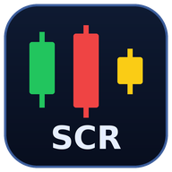
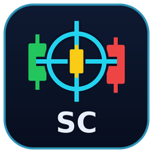

Strat Apps
Tap an app to open it.

Strat Chart ReaderReads Strat chart screenshots and logs your trades.
Strat CommandStrat trade plans: entry, stop, targets, grade and signal.Trade Risk CheckChecks a trade's risk before you take it.Put an app on your tablet's home screen
- Open this page in Microsoft Edge on your tablet.
- Tap the app you want, so it opens.
- Tap the three-dot menu (⋯) at the bottom of the screen.
- Tap Add to phone, then Install or Add.
- Do the same for each app. Each one gets its own icon on your home screen.
Your trades and settings are saved only on the device you use. Nothing you enter is sent to this site.